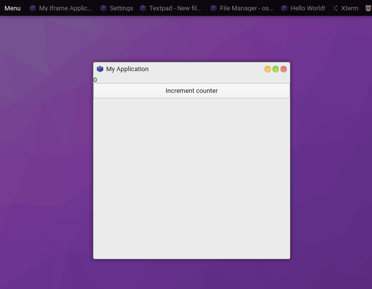

GUI Tutorial
This tutorial goes over how to create reactive UIs using components.
Usage
OS.js by default uses Hyperapp v1 for creating reactive state based user interfaces.
This does not mean that you are restricted to usage of Hyperapp. You can use React, Vue or anything you like.
Hyperapp is based a tiny framework for building hypertext applications. It's component based and uses a Virtual DOM, making it similar to other reactive frameworks in usage and operation. Look up the official documentation (linked above) for a deeper dive of the inner workings.
If you're familiar with frameworks similar to React, you can use the JSX syntax for a more familiar experience.
Basic Example

import {h, app} from 'hyperapp';
const createView = (state, actions) => h('div', {}, [
h('div', {}, String(state.counter)),
h('button', {type: 'button', onclick: () => actions.increment()}, 'Increment counter')
]);
const createApp = ($content) => {
app({
counter: 0
}, {
increment: () => state => ({counter: state.counter + 1})
}, createView, $content);
};
If you want to use this in your Application, you can simply change your rendering call:
const win = proc.createWindow(/* ... */)
win.render($content => createApp($content));
You can of course insert this into any arbitrary DOM element.
Using Components
A standard component library for Hyperapp is officially provided.

import {Box, BoxContainer, Button} from '@osjs/gui';
const createView = (state, actions) => h(Box, {}, [
h(BoxContainer, {}, String(state.counter)),
h(Button, {onclick: () => actions.increment(), label: 'Increment counter'})
]);
See the Pen by andersevenrud (@andersevenrud) on CodePen.
JSX
You can also use JSX syntax (like React) instead of the pragma (h()) approach.
First: npm install --save-dev @babel/plugin-transform-react-jsx
Then in your package.jsons babel section:
{
"presets": [
"@babel/preset-env"
],
"plugins": [
"@babel/plugin-transform-runtime",
["@babel/plugin-transform-react-jsx", {
"pragma": "h"
}]
]
}
and then in your source you can now do the following:
const createView = (state, actions) => (
<div>
<div>{state.counter}</div>
<button type="button" onclick={() => actions.increment()}>Increment counter</button>
</div>
);
Contextmenu
You can create (context) menus via the GUI provider:
core.make('osjs/contextmenu', {
position: Event || Element || Object,
menu: [{
label: 'Some label',
onclick: ev => console.log('Clicked')
}, {
label: 'Sub items',
items: [{
label: 'Sub item',
onclick: ev => console.log('Clicked sub item')
}, {
label: 'Check item 1',
checked: true,
onclick: ev => console.log('Clicked sub item')
}, {
label: 'Check item 2',
checked: true,
onclick: ev => console.log('Clicked sub item')
}]
}]
});
You can also forcefully hide an open menu with core.make('osjs/contextmenu').hide().
Components
This is the list of standard GUI components.
All components uses Flexbox and supports the following props:
orientation- Orientation of children (horizontal/vertical)grow- Grow factor (default0)shrink- Shrink factor (default0)basis- Base size (defaultauto)align- Align itemsjustify- Justify contentmargin / padding- Padding/Margin (boolean/string/number forBox)
Notes:
- Non-container elements gets the flexbox model from the
boxproperty.- All components based on browser elements supports the standard properties.
The component set is under development
Containers
| Name | Description | Custom Props |
|---|---|---|
| Box | Flexbox container (padded) | See above |
| BoxContainer | Flexbox container (simple, like a div) |
See above |
| Toolbar | Flexbox container (spaced) | See above |
| Menubar | Toolbar, except for menus | |
| Tabs | Tabbed container(s) | {labels: [String,...]} |
| Panes | Resizeable container(s) | {orientation: String, sizes: Array[Number,...]} |
Fields
All fields have extended events that passes on the current value:
onchange: (event, value) => {}
oninput: (event, value) => {}
[info] All inputs use the standard DOM spesification for attributes. So for checkboxes etc, use
checkedinstead ofvalue.
| Name | Description | Custom Props |
|---|---|---|
| Button | <button> Element |
{label: String, icon: String} |
| RangeField | <input type="range" /> Field |
|
| TextField | <input type="text,password,..." /> Field |
|
| ToggleField | <input type="checkbox,radio" /> |
|
| SelectField | <select> Field |
{choices: Map<*, *>} |
| TextareaField | <textarea> Field |
Views
| Name | Description | Custom Props |
|---|---|---|
| ListView | A listview (not quite done) | |
| Iframe | <iframe> View |
|
| Statusbar | A statusbar with label |
Other
| Name | Description | Custom Props |
|---|---|---|
| Progressbar | A progressbar with label | {value: Number} |
| Image | <img /> element |
|
| Video | <video /> element |
Component Examples
Basic Layout
A simple three-row layout:
h(Box, {grow: 1, shrink: 1}, [
h(BoxContainer, {}, 'Row 1'),
h(BoxContainer, {}, 'Row 2'),
h(BoxContainer, {}, 'Row 3')
])
See the Pen by andersevenrud (@andersevenrud) on CodePen.
Basic Layout, continued
Same as above, but contained within an outer Box with a Menubar and Statusbar
h(Box, {grow: 1, shrink: 1}, [
h(Menubar, {}, [
h(MenubarItem, {onclick: () => alert('clicked')}, 'Menubar Item')
]),
h(Box, {grow: 1}, [
h(BoxContainer, {}, 'Row 1'),
h(BoxContainer, {}, 'Row 2'),
h(BoxContainer, {}, 'Row 3')
]),
h(Statusbar, {}, 'Some status here')
])
See the Pen by andersevenrud (@andersevenrud) on CodePen.
Using Inputs
Reactive value for inputs:
app({
myfield: 'Initial value'
}, {
setValue: myfield => () => ({myfield})
}, (state, actions) => {
return h(Box, {}, [
h(TextField, {
value: state.myfield,
// All input comonents put in a second argument containing the value for certain input events
oninput: (ev, value) => actions.setValue(value)
})
]);
}, document.body);
See the Pen by andersevenrud (@andersevenrud) on CodePen.
Using ListView
Certain components, like ListView needs some context and works a little bit different:
import {listView} from '@osjs/gui'; // Lower-case l
const initialRows = [{
columns: [1, 2, 3],
data: {foo: 'bar'}
}];
app({
mylistview: listView.state({
// Set up the initial state
columns: ['A', 'B', 'C'],
rows: initialRows
}),
}, {
// Register callback actions
mylistview: listView.actions({
select: ({data, index, ev}) => console.log('Selected', data, index, ev),
activate: ({data, index, ev}) => console.log('Activated', data, index, ev),
contextmenu: ({data, index, ev}) => console.log('Menu', data, index, ev)
}),
}, (state, actions) => {
// Creates a new component based on the state and actions created
const MyListView = listView.component(state.mylistview, actions.mylistview);
return h(Box, {grow: 1, shrink: 1}, [
h(MyListView, {box: {grow: 1, shrink: 1}})
])
}, document.body);
See the Pen by andersevenrud (@andersevenrud) on CodePen.